Lucia Sanchez
Actriz de teatro y frente a camara
Datos personales
- Edad: 20 años
- Fecha de nacimiento: 20/05/2003
- Lugar de residencia: Punta alta, Buenos aires, Argentina
- Altura: 1.60 mts
- Color de ojos: Marron verdoso
- Color de pelo: Castaño claro, actualmente rojizo
- Peso: 70Kg
Formacion artistica
- 2017 y 2021: Taller municipal de teatro
- 2018-2021: Taller municipal de danza fusion
- 2020: Seminario de composición escénica
- 2022: Estudio Integral de Arte Denise Lencinas, diciplina: Comedia Musical
- 2022 y 2023: Intensivo de actuacion con Ricky poshkus
- 2023: Compañia de teatro independiente
Experiencia Actoral
- 2022: Cuadro musical Footloose - Estudio Integral de Arte Denise Lencinas
- 2022: High School Musical - Estudio Integral de Arte Denise Lencinas
- 2022: Sueño Lucido - Cortometraje
- 2023: Terra Esperanza - Compañia de teatro independiente
- 2023: Heroe - Compañia de teatro independiente
- 2024: El testimonio de Sara - Cortometraje
Galeria
High School Musical
Obra de teatro
Adaptacion de la pelicula High School Musical de Disney
Personaje: Sharpay Evans
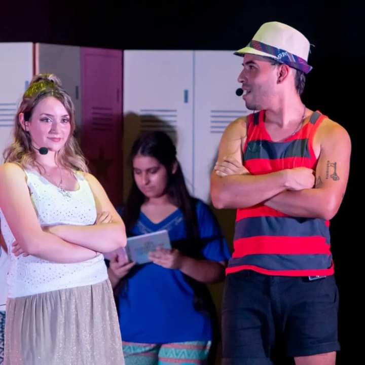
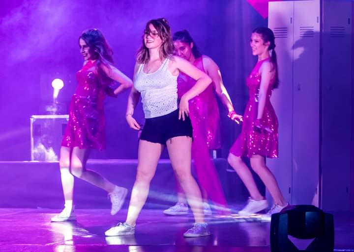
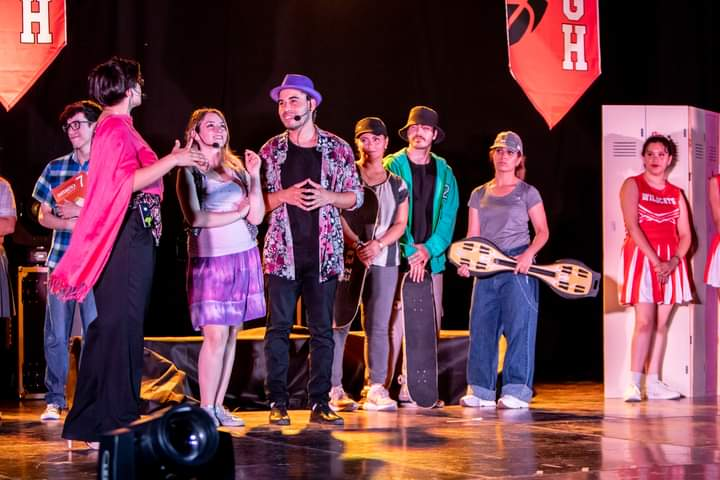
Sueño Lucido
Cortometraje ganador del premio del publico Festival 1000 gritos 2023.
Simon tiene un sueño lucido que le permitira controlar todo, excepto una cosa.
Personaje: Cecilia

 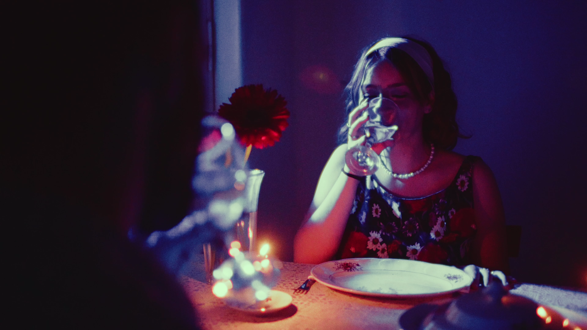
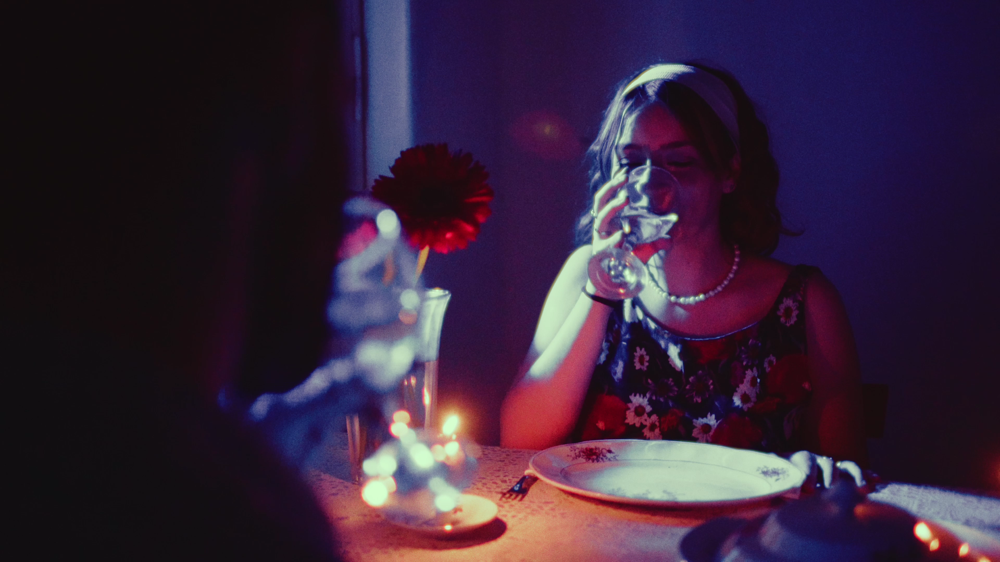
Heroe
Obra de teatro
Adaptacion teatral de la pelicula Hercules de Disney
Personaje: Megara
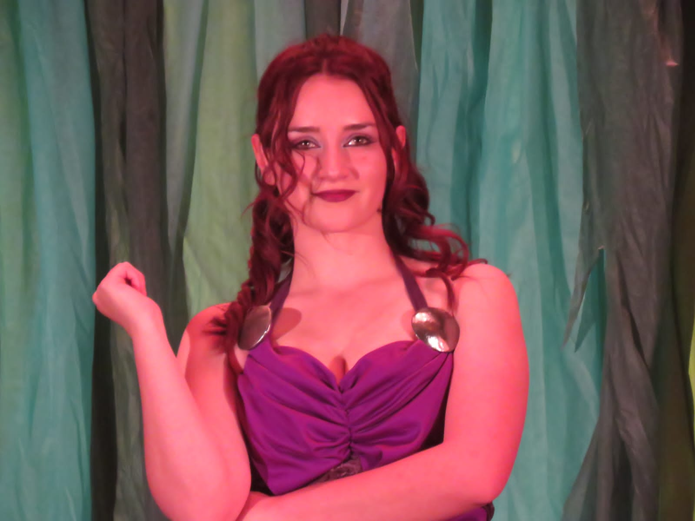
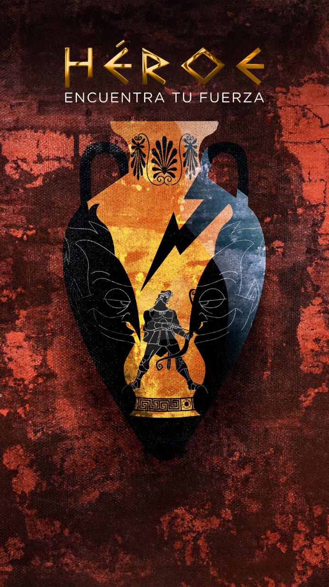
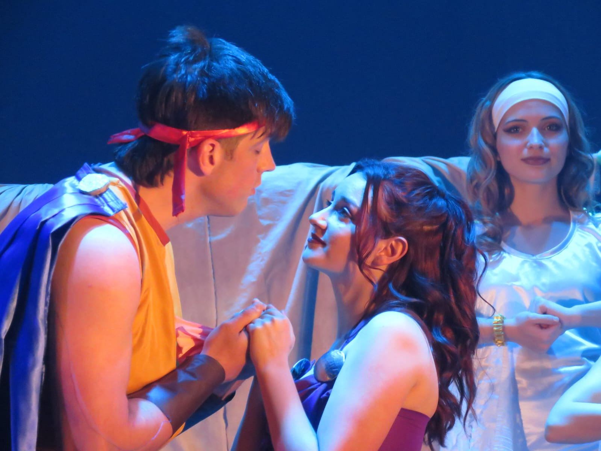
Terra Esperanza
Obra de teatro
Una historia de amor y un pueblo se ven atravesados
por el exilio forzado que causa la guerra.
El amor, la familia y la esperanza viajan de un continente a otro
Personaje: Guerra
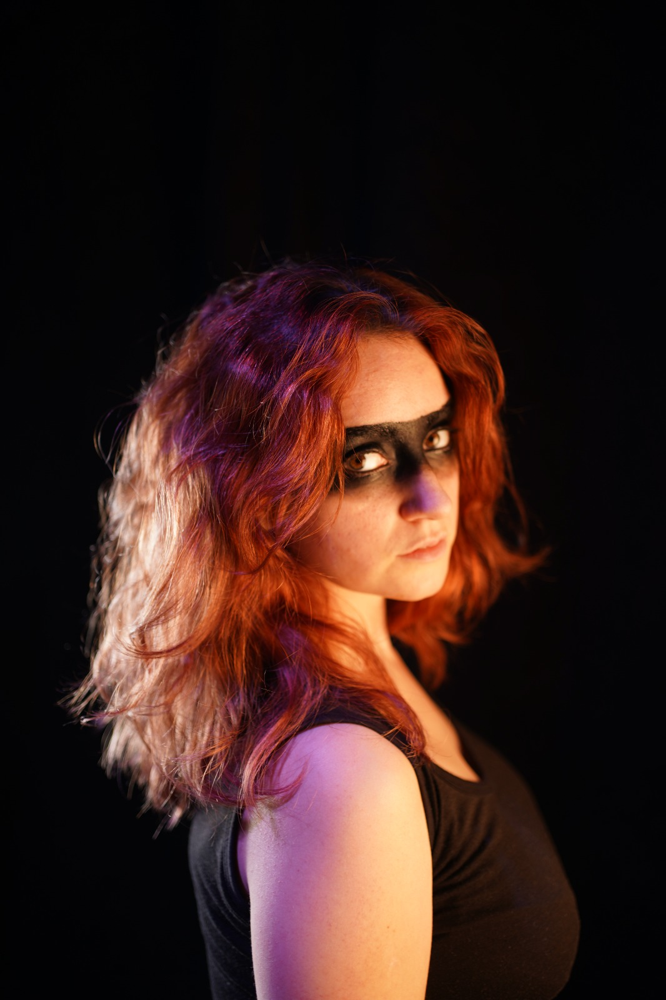
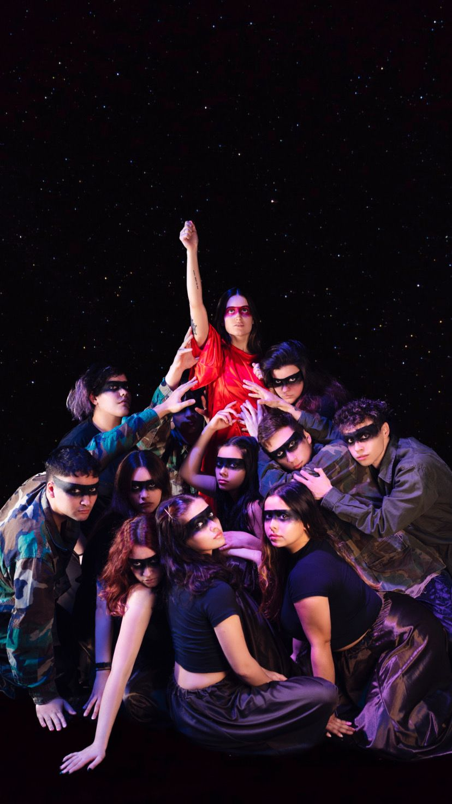
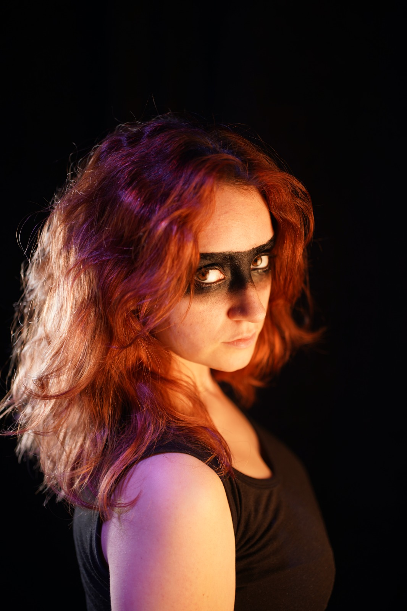
El testimonio de Sara
Cortometraje